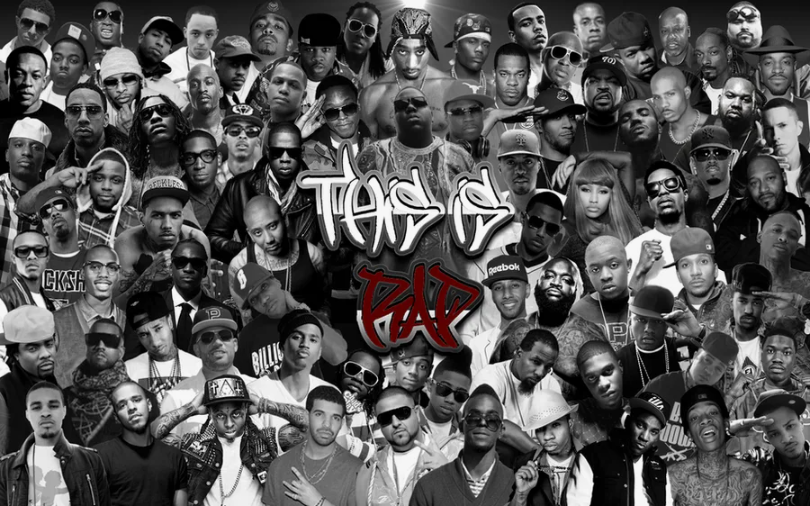
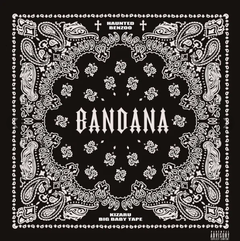

Рэп
Рэп (сокращение от «ритмичная речитация») — музыкальный жанр, основным элементом которого является ритмичное чтение стихов под музыку с чётким битом. Возник в 1970-х годах в афроамериканских кварталах Нью-Йорка. Рэп быстро распространился по всему миру и стал одним из самых популярных музыкальных жанров.
История рэпа
Истоки рэпа можно найти в африканской музыкальной традиции, а также в фанке, соуле и диско. В 1970-х годах диджеи начали использовать технику скрэтчинга, а MC стали читать рифмованные тексты под музыку. В 1980-х годах рэп стал набирать популярность, появлялись новые стили и исполнители. Сегодня рэп — это глобальный феномен, охватывающий множество поджанров и культурных влияний.
Поджанры рэпа
- Олдскул рэп
- Гангста-рэп
- Трэп
- Клауд-рэп
- Mumble rap
- Drill
Известные рэп-исполнители
- Eminem
- Скриптонит
- Big Russian Boss
- Face
- Big Baby Tape
- Noize MC
- Баста
- Oxxxymiron
- Kizaru
- Pharaon
- Kanye West
- Тимати
Рекомендуемые альбомы

Бандана
Kizaru, Big Baby Tape
Fata Morgana
Oxxxymiron & Markul